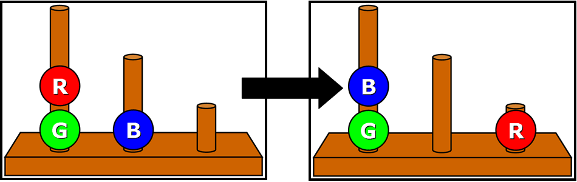

Na ekranie zobaczysz 3 drążki różnej wielkości i 3 kolorowe kule.
Kule mogą być dowolnie przemieszczane, tak jak na przykładzie poniżej:

Wzór po lewej stronie jest ułożeniem startowym. Wzór po prawej stronie jest ułożeniem końcowym.
Twoim zadaniem jest ułożenie kul w ułożeniu końcowym poprzez przemieszczanie kul na drążkach.